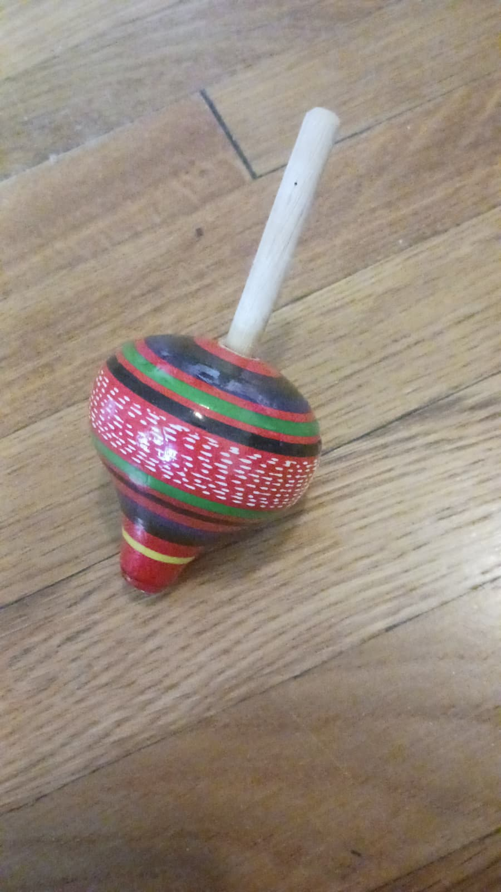

La toupie
June 26, 2026
Toi, tu résistes aux frottements du réel : une fois propulsée au monde, tu te meus dans une danse immobile. Pointes aériennes échappant à la gravité assaillante. Ton inertie impénétrable et provocatrice n'est en fait qu'apparente. Au premier indice d'une faille dissimulée, tu te mets à trembler. Spasmes harmoniques brisant peu à peu ton élan. Et soudain, tu glisses et t'écroules dans un grondement sourd.
Tout ce temps, je te regardais tel le sismographe de mon âme. Désormais, je reste seule à te contempler, étendue sur le parquet, dans un silence de mort.
— English —
You resist the frictions of reality: once propelled into the world, you spin in a motionless dance. Aerial pointes escaping the assailing gravity. Yet, your inertia – impenetrable, provocative – is only apparent. At the first sign of a hidden flaw, you begin to tremble. Harmonic spasms slowly breaking your momentum. And suddenly, you slip and collapse in a deep rumble. All this time, I was watching you as if you were the seismograph of my soul. Now I remain here, alone, to contemplate you, stretched out on the wooden floor, in a deathly silence.
— Español —
Tú resistes los roces de la realidad : empujada al mundo, te mueves en una danza inmóvil. Puntas aéreas que escapan a la gravedad asaltante. Tu inercia impenetrable y provocadora no es más que aparente. Al primer indicio de una falla oculta, comienzas a temblar. Espasmos armónicos que poco a poco erosionan tu movimiento. De repente resbalas y te desplomas con un sordo estruendo. Todo este tiempo, te estaba contemplando como el sismógrafo de mi alma. Ahora, me quedo aquí, sola, contemplándote, yacente sobre el parqué, en un silencio de muerte.
· · ·
Context & Notes
This poem is inspired by the spinning top bought at the airport in Honduras, with its brightful colors of Central America. One night, I was playing with it, and looking at its movements – quite mesmerizing –, before going dancing… It inspired me to think about how the internal chaos of one's soul manifests and expresses itself in the world.
Previous Versions
December 1, 2024
Étoile de mon âme, tu résistes, impénétrable, aux frottements du réel
Propulsée au monde, tu te meus dans une danse immobile
Et tes pointes aériennes semblent échapper à la gravité assaillante.
Sismographe de mon âme, ton inertie provocatrice n'est en fait qu'apparente.
Car premier indice d'une faille dissimulée, tu te mets à trembler
Et ces spasmes harmoniques brisent peu à peu ton élan.
Effondrement de mon âme, tes contours lisses se frottent aux aspérités de la terre.
Soudainement tu glisses et t'écroules dans un grondement sourd.
Et pétrifiée, je reste seule à te contempler, étendue, dans un silence de mort.
Comments
If this poem stirred something in you, share a thought below.